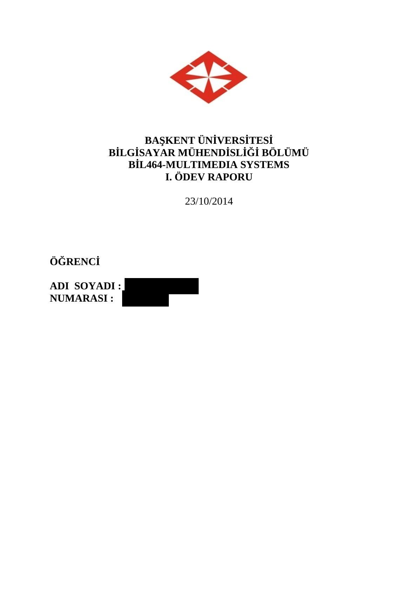

· BIL464
BIL464 Çoklu Ortam Sistemleri: 1. Ödev Raporu (Yenilikçi Uygulamalar, Frekans, Nicemleme, Gri Tonlama)
BIL464 – Çoklu Ortam Sistemleri · 23.10.2014 · 14.11.2026
Bu yazı, BIL464 Multimedia Systems dersinin 1. ödevi için bir arkadaşın hazırladığı raporun içeriğidir (23 Ekim 2014); kişisel bilgiler (ad, soyad, numara) çıkarıldı. Ödev metni elimde olmadığından soruların kapsamı yanıtlardan anlaşılmaktadır. Maskelenmiş rapor sayfaları aşağıdadır; maskelenmiş PDF yazının sonunda indirilebilir.
Yanıtlar
- Yenilikçi çoklu ortam uygulamaları.
- Twitter: çok geniş kitlelere hitap eder; yeniliğinin temeli kullanıcıların uygulama içinde son derece özgür olmasıdır. Fikirler, bir konuyu anlatan resim ve videolar gibi paylaşım materyallerini barındırır ve internet/multimedya uygulamaları başlığı altında sürekli güncel kalır. - Mobil GPS: bir ya da birden fazla uydu aracılığıyla ses ve görüntüyü birleştirerek yer ve zaman bilgisi sağlayan, uzay tabanlı bir uygulamadır; değişen çevre yapısına göre doğru bilgi için güncel tutulur. - Instagram: video ve resim paylaşma ortamlarında yenilikçi yapısı sayesinde çok tutulmuştur; kolaylığı ve arayüzünün düzenli yapısı beğenilmesinde önemli rol oynar. 2. Polycom EagleEye Director: yüz tanıma ve sesin kaynağını bulabilme özelliklerine sahip bir iletişim aracıdır; kalabalık toplantılarda bireylerin daha rahat iletişim kurmasına olanak verir (kaynak: polycom.com). 3. Frekans ve açısal frekans. Frekans, olayın belirli zaman aralığında kaç kez tekrarlandığının sayılıp bu aralığa bölünmesiyle bulunur; açısal frekans birim zamandaki radyan sayısıdır (ω). Soruda 10 ms'de 6 tekrar verilmiştir: f = 6 / 10 ms = 600 Hz, ω = 2πf = 2π·600 = 1200π. Not: ω'nın birimi Hz değil rad/s'dir (1200π ≈ 3770 rad/s); raporda "Hz" yazılmıştır. 4. Nicemleme (quantization). Sorudaki problem bir nicemleme problemidir: belirli bir aralıkta sürekli değişen analog sinyallere yeni (ayrık) değerler atanması. Analog işaret örneklenip (sampling) önceden belirlenmiş değerlere yuvarlanır; örnekler yeterli sayıda alınmazsa orijinal resimden çevrilen yeni resimde kayıplar olur. 5. RGB'den gri tonlamaya. Verilen denklem, RGB bir resmi gri tonlamaya çevirmek için kullanılır. Katsayıların farklı olmasının nedeni, insan gözünün renklere dalga boyu ve frekansa göre farklı duyarlılıkta olmasıdır: yeşil (G) katsayısı yüksektir çünkü göz yeşile diğer renklerden daha duyarlıdır; mavi (B) katsayısı düşüktür çünkü göz maviye daha az duyarlıdır; kırmızı (R) daha yüksek dalga boyu ve frekansa sahip olmasına rağmen algılanabilirliği diğer iki renk arasındadır. Not: Klasik formül gri = 0,2989·R + 0,5870·G + 0,1140·B'dir; bu BIL437 laboratuvar föyünde de geçer. Raporda "kırmızı daha yüksek frekansa sahip" denmesi hatalıdır: kırmızının dalga boyu daha uzun, frekansı daha düşüktür.
